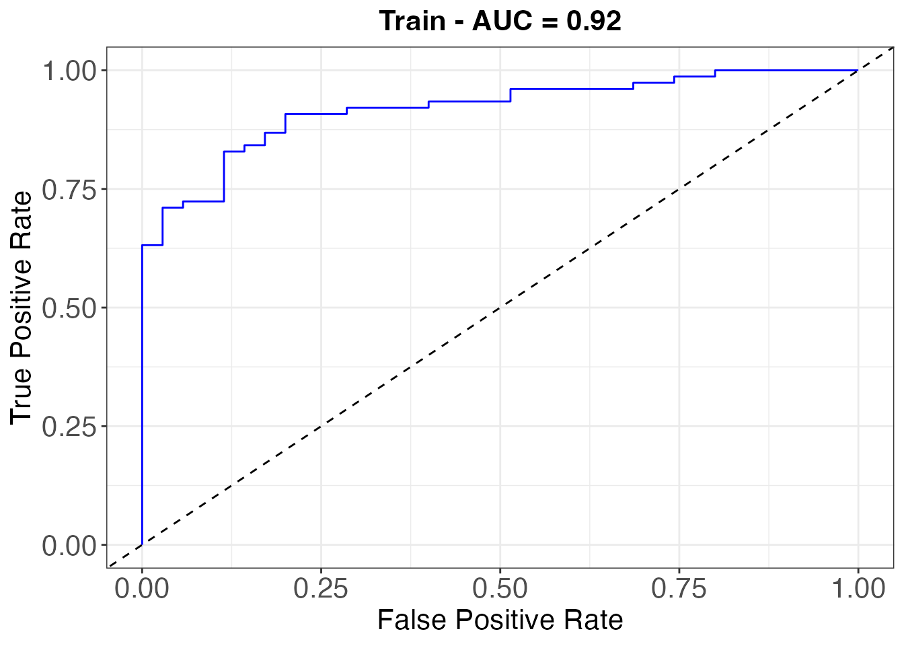
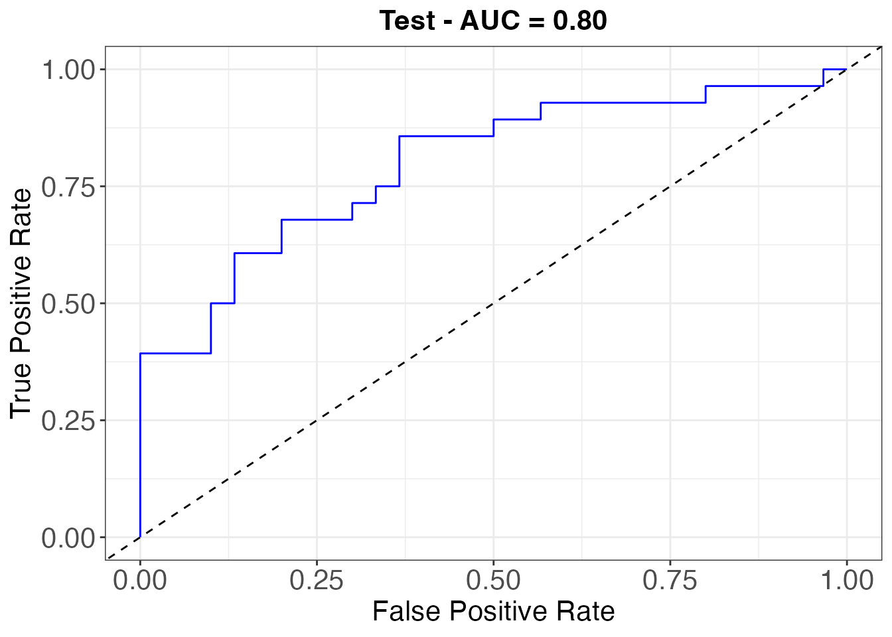
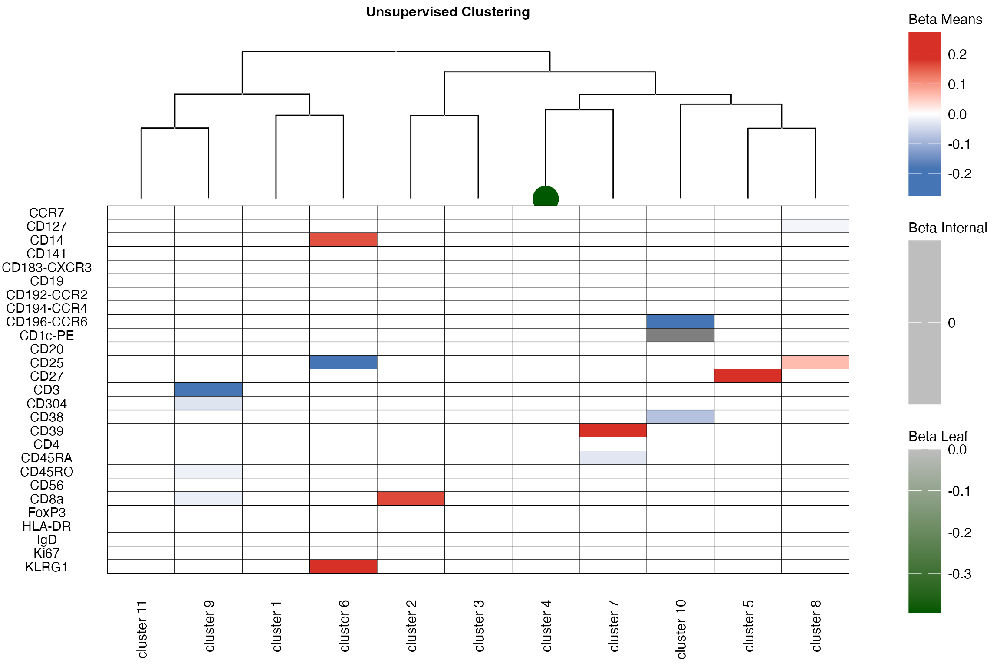
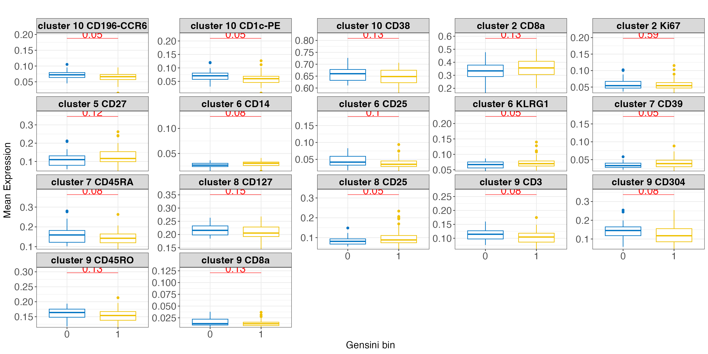
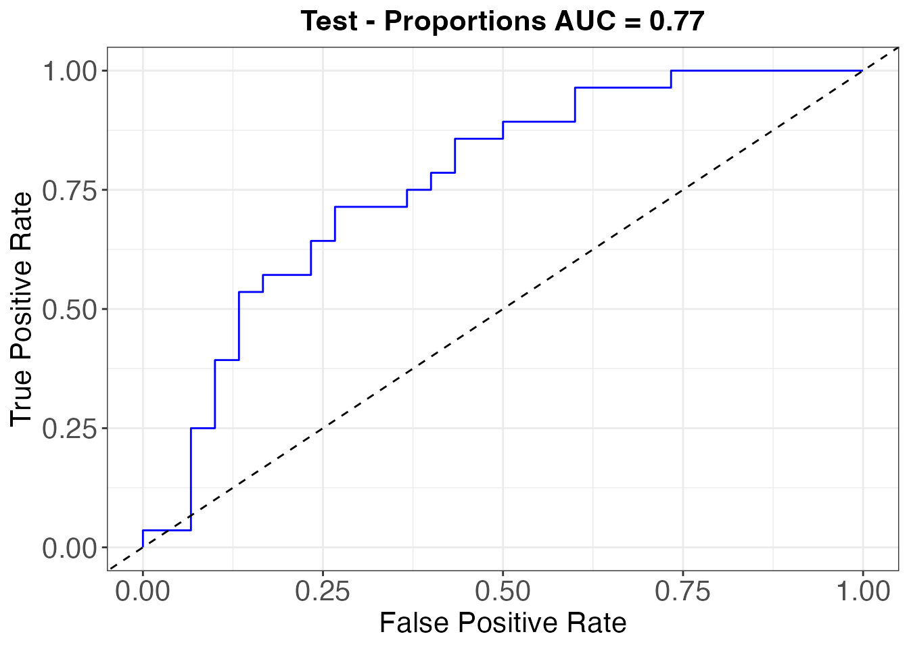
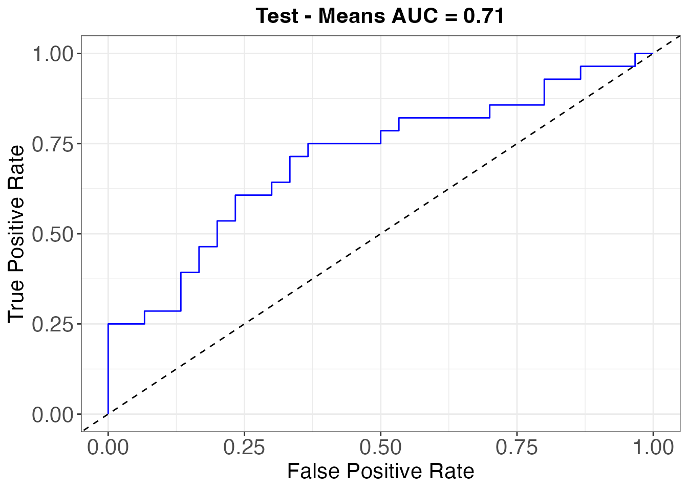

dioscRi package manual
Elijah Willie
2026-05-21
Source:vignettes/dioscRi_introduction.Rmd
dioscRi_introduction.RmdInstallation
# install.packages("devtools")
devtools::install_github("https://github.com/ecool50/dioscRi/")
library(dioscRi)Introduction
dioscRi is an R package designed to provide an
end-to-end solution for identifying significant features in single-cell
or multiplexed imaging data. Leveraging hierarchical clustering,
overlapping group lasso, and downstream interpretative tools, dioscRi
allows researchers to identify and understand the biological relevance
of features, offering a robust framework for hypothesis generation and
data-driven insights.
Overview of the dioscRi workflow
The dioscRi pipeline comprises several distinct yet interconnected steps, ensuring a smooth analytical workflow for feature identification and downstream interpretation:
Summary of the dioscRi Pipeline
-
Transferable Normalization:
- A neural network is trained on the training samples to remove technical variability while preserving biological heterogeneity.
- This step ensures consistent data normalization for downstream analysis.
-
Cell Typing:
- Cell populations are identified using clustering, manual gating, or reference-based methods.
- This step establishes distinct cell type labels for each sample.
-
Cell Type Grouping:
- Hierarchical relationships between cell types are defined using tools like treekoR or through manual annotations.
- Groups are structured for interpretability and predictive modeling.
-
Prediction and Interpretation:
- Hierarchical group lasso models are used to make predictions based on grouped cell types or features.
- The model provides interpretable outputs to understand key contributing features or cell populations.
-
New Sample Normalization:
- The trained normalization model is applied to normalize new samples, ensuring compatibility with the training data.
-
Cell Type Classification:
- Cell types in new samples are classified based on the pre-defined cell type structure and trained model.
-
New Sample Classification:
- Patient-level predictions are generated for new samples, providing probabilities or classifications (e.g., healthy vs. diseased).
- This final step enables the application of the model for clinical or experimental outcomes.
-
Notes:
- Due to the random nature of deep learning models, the results presented here will most likely differ from what is presented in the manuscript.
- Some of the packages used at the time of development may have new
versions that may change some computations.
- This is most relevant for
KerasandTensorflow
- This is most relevant for
BioHEART-CT - Background
The BioHEART-CT cohort study, a prospective longitudinal study, profiled immune cell populations associated with coronary artery disease (CAD) using mass cytometry. The dataset includes discovery (111 samples, 6 batches) and validation cohorts (58 samples, 3 batches), with manual gating identifying 11 major and 81 minor cell populations. CAD severity was measured using the Gensini score, dichotomized into CAD+ (Gensini > 0) and CAD- (Gensini = 0).
In this demonstration, we will utilize the dioscRi framework to model CAD status on this dataset, showcasing its ability to construct interpretable predictive models for high-dimensional cytometry data. Note that due to the random nature of deep learning methods, the reuslts here may differ from what is provided in the manuscript.
Load in required libraries
First we need to load in the required libraries for the models we will be fitting
Set the markers
We will be using a subset of 27 markers used in the original manuscript for manual gating.
useMarkers <- c('HLA_DR', 'CD3', 'CD4', 'CD8a', 'CD25', 'CD127', 'FoxP3', 'CD27',
'KLRG1', 'CD56', 'CD45RO', 'CD45RA', 'CD192_CCR2', 'CD194_CCR4',
'CD196_CCR6',
'CD39', 'CD38', 'Ki67', 'CD183_CXCR3', 'CCR7', 'CD19', 'CD20',
'IgD', 'CD14', 'CD304', 'CD141', 'CD1c_PE')
allMarkers <- c('HLA_DR', 'CD3', 'CD4', 'CD8a', 'CD25', 'CD127', 'FoxP3', 'CD27',
'KLRG1', 'CD56', 'CD45RO', 'CD45RA', 'CD192_CCR2', 'CD194_CCR4',
'CD196_CCR6',
'CD39', 'CD38', 'Ki67', 'CD183_CXCR3', 'CCR7', 'CD19', 'CD20',
'IgD', 'CD14', 'CD304', 'CD141', 'CD1c_PE', "CD11b", "CD253_TRAIL",
"CD34", "CD61", "CD11c", "eNOS", "LOX_1", "CD86", "CD16", "CD45_106",
"CD45_108", "P2X7", "NOX5")Read in the datasets
The discovery study will be used to for training and the validation study will be used for testing
# Discovery study
set.seed(1994)
df_train <- fread('../../data/raw_data/bioheart_ct_cytof_data_b4_mg.csv',
nThread = 7) %>%
as.data.frame()
# Validation study
df_test <- fread('../../misc/Study_3_2019/all_batches_processed_mg_10K.csv',
nThread = 7) %>%
as.data.frame()Dataset transformation
As is standard with cytometry data, the arsinh
transformation will be applied. The arcsinh transformation is commonly
used in cytometry data to manage its wide dynamic range and skewed
distribution. It compresses large signal intensities while preserving
low-intensity values and handles negative or near-zero values
effectively, unlike logarithmic transformations. This transformation
improves statistical analyses, such as clustering, and enhances
visualization by clearly separating cell populations, ensuring
consistency and interpretability across studies.
We apply two parallel asinh streams: one without derandomisation
(derand = FALSE) for the data that goes through the
MMD-VAE, and one with derandomisation (derand = TRUE) for
selecting reference samples by covariance structure.
# training data: two asinh streams
df_train_scaled <- df_train
df_train[, useMarkers] <- cyCombine::transform_asinh(df_train[, useMarkers],
markers = useMarkers, derand = FALSE)
df_train_scaled[, useMarkers] <- cyCombine::transform_asinh(df_train_scaled[, useMarkers],
markers = useMarkers, derand = TRUE)
# testing data: same two streams
df_test_scaled <- df_test
df_test[, useMarkers] <- cyCombine::transform_asinh(df_test[, useMarkers],
markers = useMarkers, derand = FALSE)
df_test_scaled[, useMarkers] <- cyCombine::transform_asinh(df_test_scaled[, useMarkers],
markers = useMarkers, derand = TRUE)
# rename markers (underscores -> hyphens) on all four data frames
for (nm in c("df_train", "df_train_scaled", "df_test", "df_test_scaled")) {
d <- get(nm)
hit <- colnames(d) %in% useMarkers
colnames(d)[hit] <- gsub("_", "-", colnames(d)[hit])
assign(nm, d)
}
useMarkers <- gsub("_", "-", useMarkers)
allMarkers <- gsub("_", "-", allMarkers)Range transformation for the MMD-VAE model
Before fitting the MMD-VAE deep learning model, we transform the range of the dataset to [0,1]. We fit one range transformer on the derand=FALSE training stream (which will be fed to the VAE) and apply it to the derand=TRUE test stream so that the test data is range-normalised using the cleaner training bounds. A second range transformer is fit on the derand=TRUE training stream and used for reference-sample selection.
# range transformer fit on the VAE-bound (derand=FALSE) training data
preProcValues <- preProcess(df_train[, useMarkers], method = c("range"))
# range transformer fit on the derand=TRUE training data (used for ref-sample selection)
preProcValues_raw <- preProcess(df_train_scaled[, useMarkers], method = c("range"))
df_train[, useMarkers] <- predict(preProcValues, df_train[, useMarkers])
df_train_scaled[, useMarkers] <- predict(preProcValues_raw, df_train_scaled[, useMarkers])
# test: range-normalise the derand=TRUE values using the training (derand=FALSE) bounds
df_test[, useMarkers] <- predict(preProcValues, df_test_scaled[, useMarkers])
df_test_scaled[, useMarkers] <- predict(preProcValues_raw, df_test_scaled[, useMarkers])Get the reference samples for training and validating the MMD-VAE model
To further speed up training of the MMD-VAE model, we select a set of samples which will be used for training. To select these samples, we first compute the covariance matrix for each sample; next the pairwise Frobenius norms of the covariances for all samples are computed; finally the top samples are selected by averaging all the Frobenius norms for each sample and returning the top with the minimum average. We set to in our analyses. Reference selection is performed on the derand=TRUE stream so that the per-sample covariances are computed on cleanly-jittered data.
# compute the reference samples on the derand=TRUE stream
res_ind <- computeReferenceSample(df_train_scaled, useMarkers, N = 2)
# get the training and validation samples FROM the derand=FALSE stream (the one we feed to the VAE)
train_dat <- df_train[df_train$sample_id %in% res_ind$topNSamples, ]
val_dat <- df_train[df_train$sample_id %in% res_ind$bottomNSamples, ]Fit the MMD-VAE model
For training a transferable normalisation model, we use the Maximum Mean Discrepancy Variational Autoencoder (MMD-VAE) which uses the MMD loss instead of the KL-divergence loss. For added regularisation, we set . The model is fit with batch size of over epochs.
batch_size = 32L
vae_model <- trainVAEModel(trainData = train_dat[, useMarkers], batchSize = batch_size,
useMarkers = useMarkers, epochs = 100, lambda = 0.01,
valData = val_dat[, useMarkers], verbose = 0L,
earlyStop = FALSE)Normalise both the training and testing using the fitted VAE model
After training the normalisation model, both the training and the
testing data are normalised using the trained model. We pass the
derand=FALSE streams (df_train and df_test)
through the encoder/decoder.
train_decoded <- decodeSamples(newSamples = as.matrix(df_train[, useMarkers]),
vae = vae_model$vae)## 34577/34577 - 5s - 155us/step
## 34577/34577 - 5s - 147us/step
df_norm <- train_decoded[[1]]
colnames(df_norm) <- useMarkers
test_decoded <- decodeSamples(newSamples = as.matrix(df_test[, useMarkers]),
vae = vae_model$vae)## 18125/18125 - 3s - 152us/step
## 18125/18125 - 3s - 152us/step
df_test_norm <- test_decoded[[1]]
colnames(df_test_norm) <- useMarkersCreate SCE objects
Before performing downstream analyses, we first compile both the
training and testing datasets into a
SingleCellExperiment(SCE) object. We also add the
embeddings from the vae model into the SCE object for later use.
# the training data
sce_train <- SingleCellExperiment(assays = list(norm = t(df_norm[, useMarkers])
),
colData = df_train %>% dplyr::select(-useMarkers))
## add the vae embeddings
reducedDims(sce_train) <- list(VAE=train_decoded$encoded %>%
as.matrix() %>%
as.data.frame())
# testing data
sce_test <- SingleCellExperiment(assays = list(norm = t(df_test_norm[, useMarkers])
),
colData = df_test %>% dplyr::select(-useMarkers))
## add the vae embeddings
reducedDims(sce_test) <- list(VAE=test_decoded$encoded %>%
as.matrix() %>%
as.data.frame())Cluster the training data
Next, the normalised training data is clustered into
clusters using the FuseSOM algorithm. The
FuseSOM algorithm combines multiple similarity metrics
through multiview ensemble learning and hierarchical clustering to
create cell types.
sce_train$clusters_norm <- NULL
nclust <- 11
sce_train <- runFuseSOM(sce_train, numClusters = nclust, assay = 'norm',
verbose = FALSE, clusterCol = 'clusters_norm')
aricode::ARI(sce_train$clusters_norm, sce_train$mg_cell_type_distinct)## [1] 0.7841756Train cell type identification model
Before doing patient classification, we need to compute the clusters
for the testing data. To do so, we use the clusters from the training
data to train a Linear Discriminant Analysis (LDA) model
using the vae embeddings from earlier. The caret package is
used to fit this mode
# set up the training data
train_x <- reducedDim(sce_train, type = "VAE") %>%
mutate(cellTypes = as.factor(sce_train$clusters_norm))
# setup th testing data
test_x <- reducedDim(sce_test, type = "VAE")
# train the model
df_test_clusters <- trainCellTypeClassifier(trainX = train_x, testX = test_x, model = 'lda')
# update the clusters for the test data
sce_test$clusters_norm <- df_test_clustersSet up clinical information
Next, we setup the clinical information that will be used in the
patient prediction model. For the BioHEART-CT dataset, we are predicting
CAD status via Gensini which is a continous
variable. In order to fit the prediction model, we binarise it to
and
.
# The training data
clinicaldata_train <- colData(sce_train) %>%
as.data.frame() %>%
dplyr::select(sample_id, Gensini, Gender, Age) %>%
distinct()
# binarise the gensini variable
clinicaldata_train$Gensini_bin <- factor(if_else(clinicaldata_train$Gensini > 0, 1, 0))
# The testing data - gensini is already binarised
clinicaldata_test <- colData(sce_test) %>%
as.data.frame() %>%
dplyr::select(sample_id, Gensini_bin, Gender, Age) %>%
distinct()Compute feature sets
Next, the logit of cell type proportions in each sample and the
marker means per cell type in each sample are computed. Both of these
features with be used to train a model predict CAD status.
## Training data
# compute logit of proportions for the training set
prop_logit_train <- computeFeatures(sce = sce_train, featureType = 'prop',
cellTypeCol = 'clusters_norm', sampleCol = 'sample_id',
logit = TRUE, useMarkers = useMarkers)
# compute the marker means per cell type for the training set
markerMeanCellType_train <- computeFeatures(sce = sce_train, featureType = 'mean',
cellTypeCol = 'clusters_norm', sampleCol = 'sample_id',
logit = TRUE, useMarkers = useMarkers)
# setup response as well
row_names_train <- rownames(prop_logit_train)
y_train <- factor(clinicaldata_train[match(row_names_train,clinicaldata_train$sample_id),
"Gensini_bin"])
y_train <- as.numeric(levels(y_train))[y_train]Testing data
# compute logit of proportions for the testing set
prop_logit_test <- computeFeatures(sce = sce_test, featureType = 'prop',
cellTypeCol = 'clusters_norm', sampleCol = 'sample_id',
logit = TRUE, useMarkers = useMarkers)
# compute the marker means per cell type for the testing set
markerMeanCellType_test <- computeFeatures(sce = sce_test, featureType = 'mean',
cellTypeCol = 'clusters_norm', sampleCol = 'sample_id',
logit = TRUE, useMarkers = useMarkers)
# setup response as well
row_names_test <- rownames(prop_logit_test)
y_test <- factor(clinicaldata_test[match(row_names_test,clinicaldata_test$sample_id),
"Gensini_bin"])
y_test <- as.numeric(levels(y_test))[y_test]Generate grouping structures
The final input to overlapping group lasso model is the hierarchical structure of the cell type proportions . To generate this, we run hierarchical clustering on the logit proportions using ward linkage function on the correlation distances. The resulting tree structure is then traversed and all possible groupings of cells types in the tree are turned. This is then combined with the marker means per cell type. Note that each element in the marker means per cell type is in a group 1.
trees <- generateTree(features = prop_logit_train, method = "ward")
tree <- trees$tree
order <- trees$order
groups <- generateGroups(tree = tree, nClust = nclust,
proportions = prop_logit_train, means = markerMeanCellType_train)Process training and testing data
Now that we have the features and the grouping structure generated, we can combine the features into a matrix before passing it to overlapping group lasso model for training. ## Training data
# Combine logit proporitons and marker means per cell type
X_train <- cbind(prop_logit_train, markerMeanCellType_train) %>%
as.matrix()
# Scale the combined data so coefficients are comparable
scaleVals <- preProcess(X_train, method = c('scale'))
X_train <- predict(scaleVals, X_train) %>%
as.matrix()Fit Overlap model
Finally, everything is ready for us to fit the prediction model. The model used is the overlapping group lasso that is described here. The model was originally designed for group based lasso. However, we have modified it to be applied to overlapping groups based on here. To fit the model, we pass the features, response, and grouping structure. As with the standard lasso model, we jointly optimise and over a grid: (step ) and across values evenly spaced over . For every pair we compute ; for each the optimal is selected via the elbow method on its BIC sequence, and the final is the combination that minimises BIC across all values.
# fit the model
fit <- fitModel(xTrain = X_train, yTrain = y_train, groups = groups,
penalty = 'grLasso', seed = 1994)Assess model performace
To assess how well the model is performing, we use the ROC-AUC curve.
Training AUC
train_auc <- plotAUC(fit = fit$fit, xTest = X_train, yTest = y_train, title = "Train - AUC =")
train_auc$plot
Testing AUC
test_auc <- plotAUC(fit = fit$fit, xTest = X_test, yTest = y_test, title = "Test - AUC =")
test_auc$plot
Visualise and assess model outputs
We can look at which features are driving my model’s performance by looking at the feature tree which combines the hierarchy of the cell type proportions with marker means per cell type. For the hierarchy, the color of the node represents the value of the coefficient in the final model.
visualiseModelTree(fit = fit$fit, tree = tree, type = "cluster",
trainingData = X_train, title = "Unsupervised Clustering")
Next we can look at some distribution plots for the features with non-zero coeffients in the model to see how they differ between both classes. We can also assess their statistical significance.
Means
stats_mean <- getSigFeatures(fit$fit, type = 'mean',
mean = markerMeanCellType_train, clinicalData = clinicaldata_train,
outcome = "Gensini_bin")
sigFeatures <- stats_mean$sigFeatures
stats <- stats_mean$stats
plotSigFeatures(stats = stats, sigFeatures = sigFeatures, outcome = "Gensini bin",
type = "boxplots") +
xlab("Gensini bin")
Variants: proportions-only and means-only
The same overlap-lasso machinery can be applied to either feature
family on its own. The tabs below show the two variants; they differ
only in the design matrix and the group structure passed to
fitModel().
Proportions only
The groups come directly from the cell-type hierarchy.
X_train_p <- as.matrix(prop_logit_train)
X_test_p <- as.matrix(prop_logit_test)
groups_p <- generateGroups(tree = tree, nClust = nclust,
proportions = prop_logit_train,
means = markerMeanCellType_train, type = "prop")
groups_p <- lapply(groups_p, sort)
fit_p <- fitModel(xTrain = X_train_p, yTrain = y_train,
groups = groups_p, penalty = "grLasso", seed = 1994)
plotAUC(fit_p$fit, X_test_p, y_test, title = "Test - Proportions AUC =")$plot
Means only
Each per-cell-type marker mean is in its own group.
X_train_m <- as.matrix(markerMeanCellType_train)
X_test_m <- as.matrix(markerMeanCellType_test)
groups_m <- generateGroups(tree = tree, nClust = nclust,
proportions = prop_logit_train,
means = markerMeanCellType_train, type = "mean")
fit_m <- fitModel(xTrain = X_train_m, yTrain = y_train,
groups = groups_m, penalty = "grLasso", seed = 1994)
plotAUC(fit_m$fit, X_test_m, y_test, title = "Test - Means AUC =")$plot
Next steps
The unsupervised-clustering workflow shown above defines cell types
from the data via FuseSOM. If you instead have manually gated
populations from domain experts, see
vignette("dioscRi_manual_gating") for the straightforward
swap.
Session Info
## R version 4.5.0 (2025-04-11)
## Platform: aarch64-apple-darwin20
## Running under: macOS 26.4.1
##
## Matrix products: default
## BLAS: /Library/Frameworks/R.framework/Versions/4.5-arm64/Resources/lib/libRblas.0.dylib
## LAPACK: /Library/Frameworks/R.framework/Versions/4.5-arm64/Resources/lib/libRlapack.dylib; LAPACK version 3.12.1
##
## locale:
## [1] en_CA.UTF-8/en_CA.UTF-8/en_CA.UTF-8/C/en_CA.UTF-8/en_CA.UTF-8
##
## time zone: Australia/Sydney
## tzcode source: internal
##
## attached base packages:
## [1] stats4 stats graphics grDevices utils datasets methods
## [8] base
##
## other attached packages:
## [1] ggtree_4.0.4 ape_5.8-1
## [3] treekoR_1.16.0 data.tree_1.1.0
## [5] FuseSOM_1.1.3 SingleCellExperiment_1.30.1
## [7] SummarizedExperiment_1.40.0 Biobase_2.70.0
## [9] GenomicRanges_1.62.1 Seqinfo_1.0.0
## [11] IRanges_2.44.0 S4Vectors_0.48.0
## [13] BiocGenerics_0.56.0 generics_0.1.4
## [15] MatrixGenerics_1.22.0 matrixStats_1.5.0
## [17] caret_7.0-1 lattice_0.22-7
## [19] data.table_1.18.2.1 tensorflow_2.20.0
## [21] lubridate_1.9.4 forcats_1.0.0
## [23] stringr_1.6.0 dplyr_1.1.4
## [25] purrr_1.2.1 readr_2.1.5
## [27] tidyr_1.3.2 tibble_3.3.1
## [29] ggplot2_4.0.1 tidyverse_2.0.0
## [31] keras3_1.2.0 dioscRi_1.0.0
## [33] knitr_1.51 BiocStyle_2.36.0
##
## loaded via a namespace (and not attached):
## [1] fs_1.6.6 httr_1.4.7
## [3] hopach_2.68.0 RColorBrewer_1.1-3
## [5] doParallel_1.0.17 grpreg_3.5.0
## [7] ggsci_4.2.0 DataVisualizations_1.3.3
## [9] tools_4.5.0 backports_1.5.0
## [11] R6_2.6.1 vegan_2.7-1
## [13] lazyeval_0.2.2 mgcv_1.9-3
## [15] GetoptLong_1.0.5 permute_0.9-8
## [17] withr_3.0.2 sp_2.2-0
## [19] analogue_0.18.1 cli_3.6.5
## [21] textshaping_1.0.1 profileModel_0.6.1
## [23] sandwich_3.1-1 labeling_0.4.3
## [25] sass_0.4.10 mvtnorm_1.3-3
## [27] brglm_0.7.2 S7_0.2.1
## [29] proxy_0.4-29 pkgdown_2.1.3
## [31] systemfonts_1.3.1 yulab.utils_0.2.4
## [33] colorRamps_2.3.4 aricode_1.0.3
## [35] parallelly_1.46.1 limma_3.64.1
## [37] flowCore_2.20.0 shape_1.4.6.1
## [39] gridGraphics_0.5-1 car_3.1-3
## [41] RProtoBufLib_2.20.0 Matrix_1.7-3
## [43] abind_1.4-8 lifecycle_1.0.5
## [45] multcomp_1.4-28 edgeR_4.6.3
## [47] whisker_0.4.1 yaml_2.3.12
## [49] snakecase_0.11.1 carData_3.0-6
## [51] Rtsne_0.17 recipes_1.3.1
## [53] SparseArray_1.10.8 grid_4.5.0
## [55] crayon_1.5.3 zeallot_0.2.0
## [57] pillar_1.11.1 ComplexHeatmap_2.24.1
## [59] rjson_0.2.23 boot_1.3-31
## [61] future.apply_1.20.1 codetools_0.2-20
## [63] glue_1.8.0 ggiraph_0.9.3
## [65] FCPS_1.3.4 ggfun_0.2.0
## [67] fontLiberation_0.1.0 Rdpack_2.6.5
## [69] vctrs_0.7.1 png_0.1-8
## [71] treeio_1.34.0 gtable_0.3.6
## [73] cachem_1.1.0 zigg_0.0.2
## [75] gower_1.0.2 xfun_0.56
## [77] rbibutils_2.4.1 princurve_2.1.6
## [79] S4Arrays_1.10.1 prodlim_2025.04.28
## [81] Rfast_2.1.5.2 coop_0.6-3
## [83] ConsensusClusterPlus_1.72.0 reformulas_0.4.4
## [85] survival_3.8-3 timeDate_4052.112
## [87] pheatmap_1.0.13 iterators_1.0.14
## [89] cytolib_2.20.0 hardhat_1.4.2
## [91] lava_1.8.2 statmod_1.5.0
## [93] TH.data_1.1-3 ROCR_1.0-12
## [95] ipred_0.9-15 nlme_3.1-168
## [97] fontquiver_0.2.1 GenomeInfoDb_1.44.1
## [99] bslib_0.10.0 otel_0.2.0
## [101] rpart_4.1.24 colorspace_2.1-2
## [103] nnet_7.3-20 mnormt_2.1.2
## [105] tidyselect_1.2.1 compiler_4.5.0
## [107] diffcyt_1.28.0 desc_1.4.3
## [109] fontBitstreamVera_0.1.1 DelayedArray_0.34.1
## [111] bookdown_0.43 scales_1.4.0
## [113] psych_2.5.6 tfruns_1.5.4
## [115] rappdirs_0.3.4 digest_0.6.39
## [117] minqa_1.2.8 rmarkdown_2.30
## [119] XVector_0.50.0 htmltools_0.5.9
## [121] pkgconfig_2.0.3 base64enc_0.1-6
## [123] lme4_1.1-38 fastmap_1.2.0
## [125] rlang_1.1.7 GlobalOptions_0.1.2
## [127] htmlwidgets_1.6.4 UCSC.utils_1.4.0
## [129] farver_2.1.2 jquerylib_0.1.4
## [131] zoo_1.8-15 jsonlite_2.0.0
## [133] mclust_6.1.1 ModelMetrics_1.2.2.2
## [135] magrittr_2.0.4 Formula_1.2-5
## [137] GenomeInfoDbData_1.2.14 ggplotify_0.1.3
## [139] patchwork_1.3.2 Rcpp_1.1.1
## [141] ggnewscale_0.5.2 gdtools_0.4.4
## [143] reticulate_1.44.1 stringi_1.8.7
## [145] pROC_1.19.0.1 MASS_7.3-65
## [147] plyr_1.8.9 parallel_4.5.0
## [149] listenv_0.10.0 splines_4.5.0
## [151] hms_1.1.4 circlize_0.4.16
## [153] locfit_1.5-9.12 fastcluster_1.3.0
## [155] igraph_2.1.4 ggpubr_0.6.2
## [157] ggsignif_0.6.4 cyCombine_0.2.19
## [159] reshape2_1.4.5 XML_3.99-0.18
## [161] evaluate_1.0.5 RcppParallel_5.1.11-1
## [163] BiocManager_1.30.26 nloptr_2.2.1
## [165] tweenr_2.0.3 tzdb_0.5.0
## [167] foreach_1.5.2 polyclip_1.10-7
## [169] clue_0.3-66 future_1.69.0
## [171] ggforce_0.5.0 janitor_2.2.1
## [173] broom_1.0.12 tidytree_0.4.7
## [175] rstatix_0.7.3 class_7.3-23
## [177] ragg_1.4.0 aplot_0.2.9
## [179] FlowSOM_2.16.0 cluster_2.1.8.1
## [181] timechange_0.4.0 globals_0.19.0